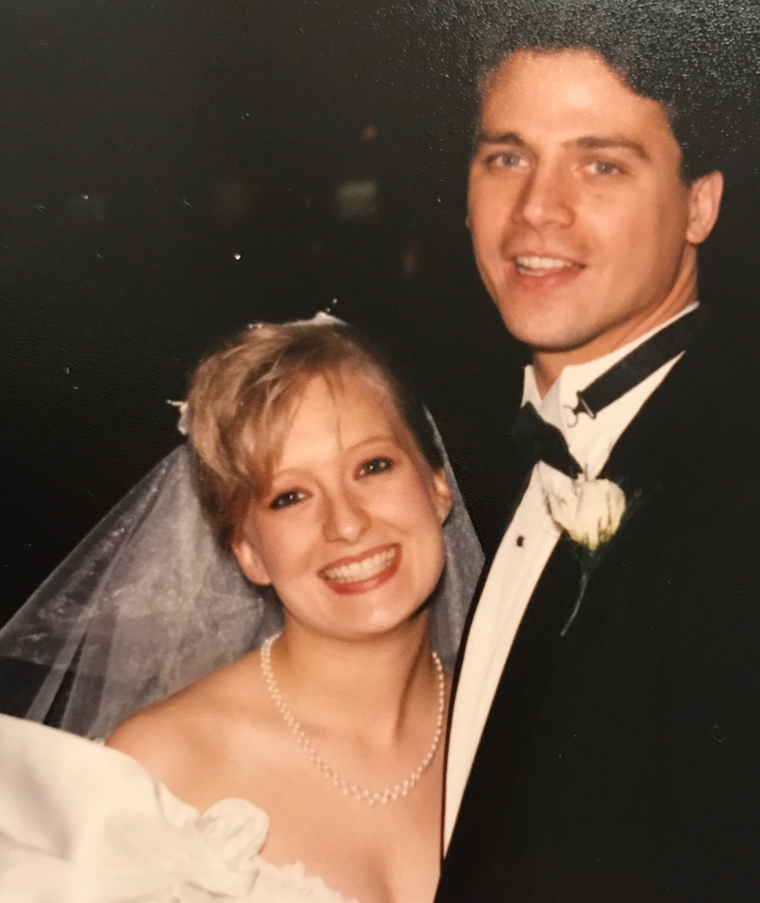

Someone Like You - Van Morrison
03.16.17

Twenty-five years ago today, I got married to my best friend. Aside from a slight bridesmaid dress malfunction, our wedding day was relatively stress free. We got married at the Prince of Peace Lutheran Church on the East side of Des Moines. As I walked down the aisle, trumpets played, LITERALLY. This was a special request from my soon to be mother-in-law; her entreats were few but concise. Erik’s cousin lead our marriage ceremony, my 18-year-old niece, Stacey, sang the Beatles song, “In My Life”, and my roughly 21-year-old nephew, Sonny, sang a Van Morrison favorite "Have I Told You Lately". I was a proud little auntie as I listened to them masterfully sing their assignment. While our song choices were non traditional, I sensed that the church pianist enjoyed the deviation from her list of house regulars.
After the ceremony, my new husband and I rode by limousine to our reception at the Hotel Fort Des Moines. The limousine trip was detoured as we drove by our soon to be house; it was not much to look at. It defined “fixer upper”, and that was apparent to the limousine driver as we pointed it out and he replied, “That one???”. We nearly laughed after his response. I sensed he felt his tip may be at risk as he quickly followed up with, “This is a nice neighborhood”.
After our ride, we arrived at the hotel and made our way to the reception. As we were ready to enter the ballroom, I distinctly remember telling my husband, “Who are all of these people?”. My mother-in law’s many close friends had gathered near the grand entrance. As we eased our way through the crowd, we were reunited with our family and friends. Dinner was followed by a toast and cake. Afterwards, we made our way to the dance floor for our debut as a married couple.
After announcing us in some cliché sort of way, the DJ played "Someone Like You" by Van Morrison. When the song played, my heart was full. It gave me a sense of ease in my over the top wedding day. I was starting a new chapter in my life and was ready for the ride. Thus far, our “ride” has presented many speedbumps. We have had celebration and loss, laughter and tears, moments of great happiness and moments of discontent. Nevertheless, we have always had music. Music is what brought us together in the first place. Music connected us from the day we met. On one of our first dates, I distinctly remember giving young (non-Facebook fighting) Rik a mixtape and he reciprocated. Our tastes overlapped, ALOT.
Since our first date, I have always appreciated Erik’s self-deprecating sense of humor and his persistent curiosity about everything football and political. He.has always brought me back to reality about all things that were truly important…... I’ve gotta say, in all sincerity, he's always been there when I needed him.
Happy anniversary, Rik. As our wedding dance song goes, “The best is yet to come…”
~ #skol